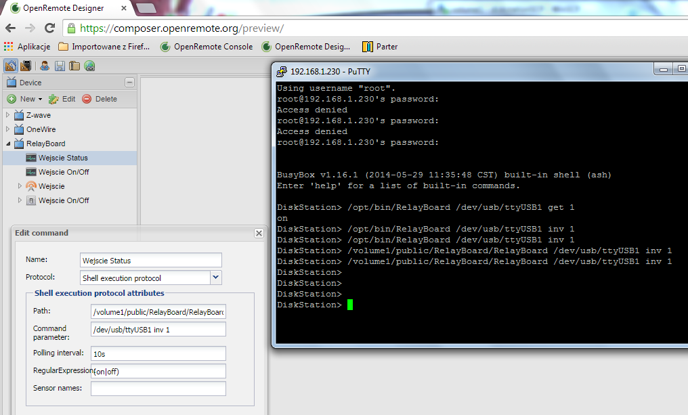
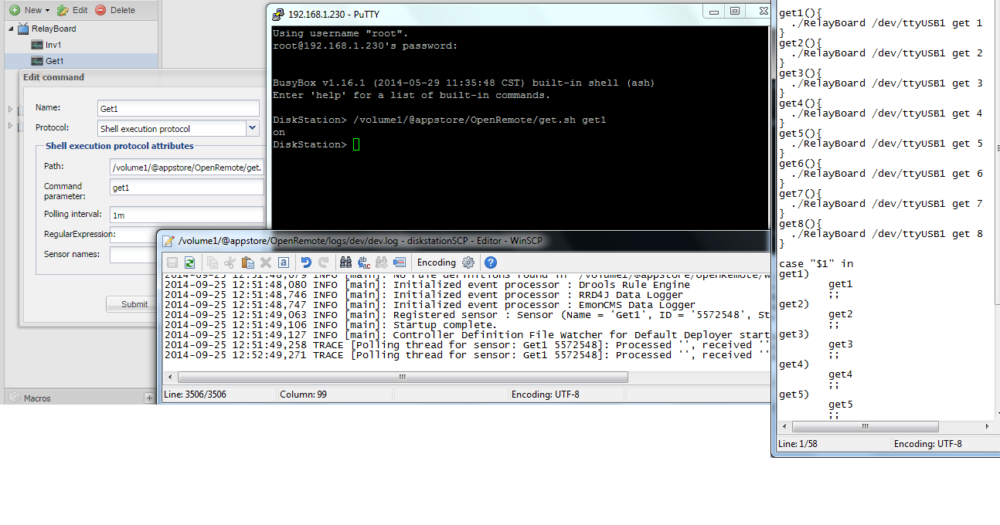

|
This page last changed on Sep 07, 2014 by tommi.
Hi, I have USB Relay Board with 8 relays and i/o
it was used with "producer" software since long time in parallel with android client and IR TV pilot.
I want to integrate it in to OR but i have problem with it.
normally it works with command prompt from OR server machine for, when I try to use Shell execution protocol there is no reaction.
on screen there is my config.
any hint what I'm doing wrong?
normally it runs from /opt/...
i have put it in to public to check permissions and no change.
!config|thumbnail!
|
Shouldn't the command parameter use "get 1" instead of "inv 1" on your status command ?
Also, if it already returns "on" or "off" string, no need to include a regular expression.

Posted by ebariaux at Sep 08, 2014 07:33
|
|
Get 1 returns on/off of first relay. Inv 1 change the state of relay.
In the OR fields it is ok?
Posted by tommi at Sep 08, 2014 21:23
|
|
If "inv 1" changes the relay status, according with your screen you will be changing the relay status every 10s.
10s on
10s off,
is it what you want?
I think you should have one command with "env 1" without poll neither on|off
and one sensor with "get 1"
I see you pass the serial as parameter for the script, I guess this script open the serial, do whatever, then close it
In this case both (command and sensor) share the same serial. You might have conflict sometimes, the command and the sensor trying to access the serial at same time.
With my arduinos I use a Serial to TCP bridge, keep serial open all the time and send/read through TCP.
Posted by rberg at Sep 25, 2014 07:36
|
|
already make some cleanup but still result is blank
as you can see in the screen
any help?

Posted by tommi at Sep 25, 2014 11:10
|
|
I've simulated your script and it worked for me. with sensor type "switch".
The only thing i can see is the ash shell. I use bash instead.
Create a new script, get.sh,
#!/bin/ash
/path_to_get1/get1.sh get1
Now in the command set to the new get.sh instead of get1.sh and remove the parameter "get1"
Does busybox have bash? try with bash.
Posted by rberg at Sep 25, 2014 20:52
|
|
with #!/bin/ash works fine in all versions of script
Thanks
Posted by tommi at Sep 26, 2014 19:43
|
|
{kind=link}
{kind=link}